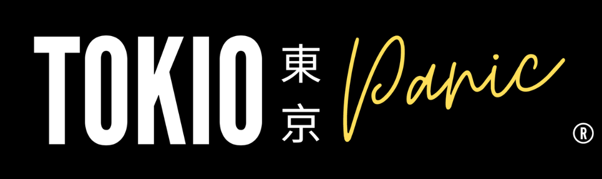
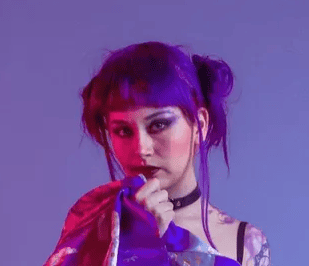

Nosotros

TOKIO PANIC es un proyecto independiente dedicado a impulsar la escena del rock japonés y el visual kei en el mundo hispanohablante. Nos posicionamos como un medio de comunicación para fans, músicos y curiosos, con el objetivo de inspirar y conectar a las nuevas generaciones con la cultura japonesa a través de la música.
Conoce al equipo

Midori
Fundadora & Host

Apasionada del visual kei y la cultura japonesa. Conecta con la audiencia a través del podcast y las redes sociales.
Josué Guajardo
Fundador & Desarrollador
Desarrollador y fanático del rock japonés. Detrás de la web de TOKIO PANIC y la producción del podcast.